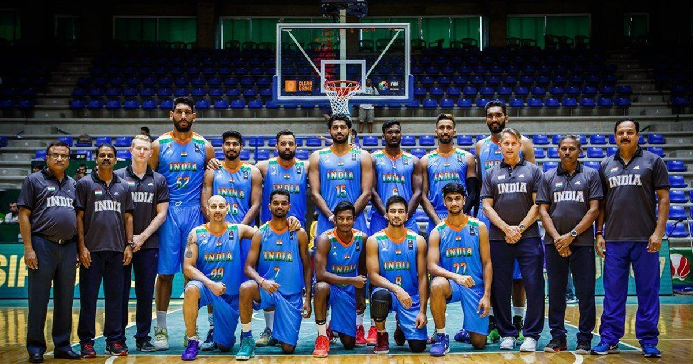

The game of basketball has truly become global in the last few years. The game is currently popular in the United States. Also, it is described by many as an American game because of the fun and competitive element in it. Also, this is one of the games which is played indoors and still caters to billions of fans around the world. This game was Dr. James Naismith from Canada. Initially, he invented the game by using a rectangular pitch which was 6 feet wide and 4 feet high. Additionally, the court includes a free throw line which is 12 feet long. In basketball essay, students will get to know about the different components that make the game of basketball special.
The India men's national basketball team represents India in international men's basketball. It is controlled by Basketball Federation of India.[3] The team made significant improvements as the sports of basketball is becoming more popular.[4]A 1936 founding member of FIBA Asia,[5] India has one of Asia's longest basketball traditions. Throughout its history, Team India qualified for the FIBA Asia Championship 26 times and is placed in the top five in appearances in this tournament. Further, India's basketball team won four gold medals and one silver medal at the South Asian Games and became the most successful team in South Asian region. India have also won the SABA Championship six times.[6] Team India celebrated its victory at the 2014 Lusofonia Games after they finished the tournament with a 4–0 record as they beat 11–time African Champions Angola in the final.[7]Its most famous moment came at the 2014 FIBA Asia Cup with the win against home favorites and most successful Asian team China by seven points.[3][8] This win has been labelled as the biggest basketball win in the nation's history.[9]
